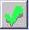
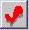
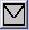

In this solution...
- Purpose
- Before You Begin
- Steps
- Want to Learn More?
- Related Solutions
- Related Education Opportunities
Purpose
After the patient has been seen by the healthcare provider and all in-office procedures (labs, tests, vaccines, etc.) have been completed, the patient's name will appear on the Checkout screen. Workplans can also be configured to move the patient to a Pre-checkout (Holding) room for approval before moving to Checkout. Keep in mind that billing information will not be sent to the billing and scheduling system until the patient has been checked out. For this reason, it is important to clear out any patients in these pre-checkout areas, if applicable, at the end of each day.
Select the Checkout tab on the Office view to review the list of patients who have checked out during the day. The patients will remain in the Checkout room until the end of the day. You do not have to manually clear the room. When the calendar date changes to the next day, the checkout room is automatically emptied.
Icons on the Checkout Room
Each encounter in the Checkout Room will have a billing icon to the right of the encounter bar. This icon indicates the status of the billing when encounterPRO is integrated with a PMS.
Billing was successfully posted to the PMS
 Posting to the PMS in progress
 Problem posting to the PMS
Encounter is not billable
Billing was rejected by the PMS
 Billing is in the process of re-posting Billing is in the process of re-posting
 Message sent to Billing Specialist
Before You Begin
Ensure that all services and documentation have been completed for the patient.
|